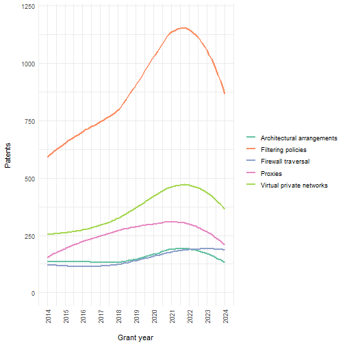

Accessing patent data with the patentsview package
Chris Baker
Russ Allen
2024-09-12
Source:vignettes/ropensci_blog_post.Rmd
ropensci_blog_post.RmdThis is Chris’ ropensci blog post from 2017-09-12 that announced the creation of the original patentsview package, edited by Russ to work with the new version of the R package and API. The original post is here. Something to note when comparing the original post to this one, the total_hits returned by the original version of the API was capped at 100,000, now it’s seemingly unbounded. Also, note that some fields used in examples in the original post are no longer available from the new version of the API, as mentioned below.
Why care about patents?
1. Patents play a critical role in incentivizing innovation, without which we wouldn’t have much of the technology we rely on everyday
What does your iPhone, Google’s PageRank algorithm, and a butter substitute called Smart Balance all have in common?
…They all probably wouldn’t be here if not for patents. A patent provides its owner with the ability to make money off of something that they invented, without having to worry about someone else copying their technology. Think Apple would spend millions of dollars developing the iPhone if Samsung could just come along and rip it off? Probably not.
2. Patents offer a great opportunity for data analysis
There are two primary reasons for this:
- Patent data is public. In return for the exclusive right to profit off an invention, an individual/company has to publicly disclose the details of their invention to the rest of the world. Examples of those details include the patent’s title, abstract, technology classification, assigned organizations, etc.
- Patent data can answer questions that people care about. Companies (especially big ones like IBM and Google) have a vested interest in extracting insights from patents, and spend a lot of time/resources trying figure out how to best manage their intellectual property (IP) rights. They’re plagued by questions like “who should I sell my underperforming patents to,” “which technology areas are open to new innovations,” “what’s going to be the next big thing in the world of buttery spreads,” etc. Patents offer a way to provide data-driven answers to these questions.
Combined, these two things make patents a prime target for data analysis. However, until recently it was hard to get at the data inside these documents. One had to either collect it manually using the official United States Patent and Trademark Office (USPTO) search engine, or figure out a way to download, parse, and model huge XML data dumps. Enter PatentsView.
PatentsView and the patentsview package
PatentsView is one of USPTO’s new initiatives intended to increase the usability and value of patent data. One feature of this project is a publicly accessible API that makes it easy to programmatically interact with the data. A few of the reasons why I like the API (and PatentsView more generally):
- An API key is now required (request one here) and throttling is imposed (handled by the new version of the R package) at 45 requests per minute.
- The project offers bulk downloads of patent data on their website (in a flat file format), for those who want to be closest to the data.
- Both the API and the bulk download data contain disambiguated entities such as inventors, assignees, organizations, etc. In other words, the API will tell you whether it thinks that John Smith on patent X is the same person as John Smith on patent Y.1
The patentsview R package is a wrapper around the
PatentsView API. It contains a function that acts as a client to the API
(search_pv()) as well as several supporting functions. Full
documentation of the package can be found on its website.
Installation
You can install the stable version of patentsview from
r-universe:
options(repos = c(
patentsview = "https://mustberuss.r-universe.dev/",
CRAN = "https://cloud.r-project.org"
))
install.packages("patentsview")Or from GitHub:
if (!require(devtools)) install.packages("devtools")
devtools::install_github("mustberuss/patentsview@api-redesign")Getting started
The package has one main function, search_pv(), that
makes it easy to send requests to the API. There are two parameters to
search_pv() that you’re going to want to think about just
about every time you call it - query and
fields. You tell the API how you want to filter the patent
data with query, and which fields you want to retrieve with
fields.2
query
Your query has to use the PatentsView
query language, which is a JSON-based syntax that is similar to the
one used by Lucene. You can write the query directly and pass it as a
string to search_pv():
library(patentsview)
qry_1 <- '{"_gt":{"patent_year":2014}}'
search_pv(query = qry_1, fields = NULL) # This will retrieve a default set of fields
#> $data
#> #### A list with a single data frame on patents level:
#>
#> List of 1
#> $ patents:'data.frame': 1000 obs. of 3 variables:
#> ..$ patent_id : chr [1:1000] "10000000" ...
#> ..$ patent_title: chr [1:1000] "Coherent LADAR using intra-pixel quadrature"..
#> ..$ patent_date : chr [1:1000] "2018-06-19" ...
#>
#> $query_results
#> #### Distinct entity counts across all downloadable pages of output:
#>
#> total_hits = 3,401,344…Or you can use the domain specific language (DSL) provided in the
patentsview package to help you write the query:
qry_2 <- qry_funs$gt(patent_year = 2014) # All DSL functions are in the qry_funs list
qry_2 # qry_2 is the same as qry_1
#> {"_gt":{"patent_year":2014}}
search_pv(query = qry_2)
#> $data
#> #### A list with a single data frame on patents level:
#>
#> List of 1
#> $ patents:'data.frame': 1000 obs. of 3 variables:
#> ..$ patent_id : chr [1:1000] "10000000" ...
#> ..$ patent_title: chr [1:1000] "Coherent LADAR using intra-pixel quadrature"..
#> ..$ patent_date : chr [1:1000] "2018-06-19" ...
#>
#> $query_results
#> #### Distinct entity counts across all downloadable pages of output:
#>
#> total_hits = 3,401,344qry_1 and qry_2 will result in the same
HTTP call to the API. Both queries search for patents in USPTO that were
published after 2014. There are three gotchas to look out for when
writing a query:
- All Fields are now queryable. The API has 23 endpoints (the default endpoint is “patent”), and each endpoint has its own set of fields that you can filter on.
-
Correct data type for field. If you’re filtering on
a field in your query, you have to make sure that the value you are
filtering on is consistent with the field’s data type. For example,
patent_yearhas type “integer,” so if you pass 2014 as a string then you’re going to get an error (patent_year = 2014is good,patent_year = "2014"is no good). You can find a field’s data type in thefieldsdfdata frame. -
Comparison function works with field’s data type.
The comparison function(s) that you use (e.g., the greater-than function
shown above,
qry_funs$gt()) must be consistent with the field’s data type. For example, you can’t use the “contains” function on fields of type “integer” (qry_funs$contains(patent_year = 2014)will throw an error). See?qry_funsfor more details.
In short, use the fieldsdf data frame when you write a
query and you should be fine. Check out the writing queries vignette for more
details.
fields
Up until now we have been using the default value for
fields. This results in the API giving us some small set of
default fields. Let’s see about retrieving some more fields:
With the original verison of the API, we requested patent_average_processing_time and inventor_total_num_patents. These fields are no longer available from the patent endpoint.
search_pv(
query = qry_funs$gt(patent_year = 2014),
fields = c("patent_abstract", "inventors.inventor_name_first")
)
#> $data
#> #### A list with a single data frame (with list column(s) inside) on patents level:
#>
#> List of 1
#> $ patents:'data.frame': 1000 obs. of 2 variables:
#> ..$ patent_abstract: chr [1:1000] "A frequency modulated (coherent) laser d"..
#> ..$ inventors :List of 1000
#>
#> $query_results
#> #### Distinct entity counts across all downloadable pages of output:
#>
#> total_hits = 3,401,344The fields that you can retrieve depends on the endpoint that you are
hitting. We’ve been using the “patent” endpoint thus far, so all of
these are retrievable:
fieldsdf[fieldsdf$endpoint == "patent", "field"]. You can
also use get_fields() to list the retrievable fields for a
given endpoint, optionally limited to specific groups of nested or top
level (the “” in groups) fields
search_pv(
query = qry_funs$gt(patent_year = 2014),
fields = get_fields(endpoint = "patent", groups = c("", "inventors"))
)
#> $data
#> #### A list with a single data frame (with list column(s) inside) on patents level:
#>
#> List of 1
#> $ patents:'data.frame': 1000 obs. of 19 variables:
#> ..$ patent_id : chr [1:10"..
#> ..$ patent_title : chr [1:10"..
#> ..$ patent_type : chr [1:10"..
#> ..$ patent_date : chr [1:10"..
#> ..$ patent_year : int [1:100..
#> ..$ patent_abstract : chr [1:10"..
#> ..$ patent_cpc_current_group_average_patent_processing_days : int [1:100..
#> ..$ patent_detail_desc_length : int [1:100..
#> ..$ patent_earliest_application_date : chr [1:10"..
#> ..$ patent_num_foreign_documents_cited : int [1:100..
#> ..$ patent_num_times_cited_by_us_patents : int [1:100..
#> ..$ patent_num_total_documents_cited : int [1:100..
#> ..$ patent_num_us_applications_cited : int [1:100..
#> ..$ patent_num_us_patents_cited : int [1:100..
#> ..$ patent_processing_days : int [1:100..
#> ..$ patent_term_extension : int [1:100..
#> ..$ gov_interest_statement : chr [1:100..
#> ..$ patent_uspc_current_mainclass_average_patent_processing_days: logi [1:10..
#> ..$ inventors :List of 1000
#>
#> $query_results
#> #### Distinct entity counts across all downloadable pages of output:
#>
#> total_hits = 3,401,344Example
Let’s look at a quick example of pulling and analyzing patent data. We’ll look at patents from the last ten years that are classified below the H04L63/00 CPC code. Patents in this area relate to “network architectures or network communication protocols for separating internal from external traffic.”3 CPC codes offer a quick and dirty way to find patents of interest, though getting a sense of their hierarchy can be tricky.
- Download the data
The original blog’s query is not possible in the new version of the API, assignee_longitude and assignee_latitude are no longer returned by the patent endpoint. Here we’ll use a different endpoint and a slightly different query to get latitudes and longitudes to plot. Now we’ll query the assignee endpoint for non-empty assignee_organization name, where their assignee_individual_name_first and assignee_individual_name_last would be empty (query where the assignee is an entity, not an individual). The sort will be by assignee_num_patents descending so we’ll get a list of the most proflic assignee_organizations
library(patentsview)
query <- with_qfuns( # with_qfuns is basically just: with(qry_funs, ...)
neq("assignee_organization" = "")
)
# Create a list of fields:
# We request the fields we will use below rather than requesting them all and
# then filtering to get just the ones we want
fields <- c("assignee_id", "assignee_organization", "assignee_num_patents",
"assignee_lastknown_latitude", "assignee_lastknown_longitude")
# Send HTTP request to API's server:
pv_res <- search_pv(endpoint = "assignee", query = query, fields = fields,
sort = c("assignee_num_patents" = "desc"), all_pages = FALSE)- See where the assignees are coming from (geographically)
library(leaflet)
library(htmltools)
library(dplyr)
library(tidyr)
library(stringr)
# My mom was an English teacher, so below we singularize/pluralize Patents
# or maybe Patents:1 was ok? Here, because of the sort, it will be unlikely
# that there will be a single patent in our results.
data <-
pv_res$data$assignees %>%
mutate(popup = paste0(
"<font color='Black'>",
htmlEscape(assignee_organization), "<br><br>Patent",
ifelse(assignee_num_patents == 1, ":", "s:"), # singular/plural
assignee_num_patents, "</font>"
)) %>%
filter_at(vars(assignee_lastknown_latitude, assignee_lastknown_longitude), any_vars(!is.na(.))) # seeing NA lats and longs
leaflet(data) %>%
addProviderTiles(providers$CartoDB.DarkMatterNoLabels) %>%
addCircleMarkers(
lng = ~assignee_lastknown_longitude, lat = ~assignee_lastknown_latitude,
popup = ~popup, radius=2, color = "yellow"
)
- Plot the growth of the field’s topics over time
library(ggplot2)
library(RColorBrewer)
# Here we issue the original post's query, rewritten for the new version of the API
# (note the field name change as well as it being nested inside the cpc_current object)
# Oh, and we bumped the patent_year to give us data for the last ten years
query <- with_qfuns( # with_qfuns is basically just: with(qry_funs, ...)
and(
begins(cpc_current.cpc_group_id = "H04L63/02"),
gte(patent_year = 2014)
)
)
# Create a list of fields:
fields <- c(
c("patent_id", "patent_year"),
get_fields(endpoint = "patent", groups = c("assignees", "cpc_current"))
)
pv_res <- search_pv(query = query, fields = fields, all_pages = TRUE)
# In the new version of the API, we don't get the CPC title back from the patent endpoint
# we have to call, you guessed it, the cpc_group endpoint now
qry <- qry_funs$begins(cpc_group_id = "H04L63/02")
qry
#> {"_begins":{"cpc_group_id":"H04L63/02"}}
cpc_info <- search_pv(query = qry, fields = get_fields("cpc_group"), endpoint = "cpc_group")
# More API craziness, in the HATEOAS link from the patent endpoint, the separator is
# inexplicably a colon. In the data that comes back from the cpc_group endpoint, the
# separator is, get this, a slash like it should be. All that to say that joining
# becomes a bit problematic or an exercise that makes dplyr wonder what we're up to.
data <-
pv_res$data$patents %>%
unnest(cpc_current) %>%
mutate(cpc_group = sub(".*/([\\w:]+)/$", "\\1", cpc_group, perl = TRUE)) %>% # unHATEOAS cpc_group, funky colon and all
filter(cpc_group != "H04L63:02") %>% # remove patents categorized into only top-level category of H04L63/02
mutate(cpc_group = sub(":", "/", cpc_group)) %>% # back to normality, ahead of a join
inner_join(cpc_info$data$cpc_groups, by = "cpc_group_id") %>%
ungroup() %>%
mutate(
title = case_when(
grepl("filtering", .$cpc_group_title, ignore.case = T) ~
"Filtering policies",
.$cpc_group %in% c("H04L63/0209", "H04L63/0218") ~
"Architectural arrangements",
grepl("Firewall traversal", .$cpc_group_title, ignore.case = T) ~
"Firewall traversal",
TRUE ~
.$cpc_group_title
)
) %>%
mutate(title = gsub(".*(?=-)-", "", title, perl = TRUE)) %>%
group_by(title, patent_year) %>%
count() %>%
ungroup()
max_year <- max(data$patent_year)
y_limit <- max(data$n) + 100 - (max(data$n) %% 100) # even hundred past the max
ggplot(data = data) +
geom_smooth(aes(x = patent_year, y = n, colour = title), se = FALSE) +
scale_x_continuous("\nGrant year",
limits = c(2014, max_year),
breaks = 2014:max_year
) +
scale_y_continuous("Patents\n", limits = c(0, y_limit)) +
scale_colour_manual("", values = brewer.pal(5, "Set2")) +
theme_bw() + # theme inspired by https://hrbrmstr.github.io/hrbrthemes/
theme(panel.border = element_blank(), axis.ticks = element_blank()) +
theme(axis.text.x = element_text(angle = 90, vjust = 0.5, hjust=1))
Learning more
For analysis examples that go into a little more depth, check out the
data applications vignettes on the
package’s website. If you’re just interested in
search_pv(), there are examples
on the site for that as well. To contribute to the package or report an
issue, check out the issues page on
GitHub.
Acknowledgments from the Original Blog Post
I’d like to thank the package’s two reviewers, Paul Oldham and Verena Haunschmid, for taking the time to review the package and providing helpful feedback. I’d also like to thank Maëlle Salmon for shepherding the package along the rOpenSci review process, as well Scott Chamberlain and Stefanie Butland for their miscellaneous help.